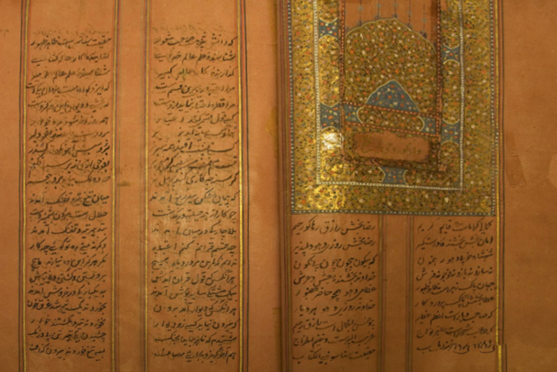

History has always interested me, and Sikh history especially, it's rich, dramatic, and honestly not something a lot of people know much about. This page is my attempt to share a bit of it, from where it all started to some of the more overlooked chapters. Honestly, I've probably rambled a bit too much for a website page, but there's a lot more to this than I could fit here.
How It Started
Sikhism began with Guru Nanak, born in Punjab in 1469. From a young age, he questioned rituals and customs that didn't hold up to reason, refusing to wear the traditional sacred thread as a boy, and later challenging religious figures who claimed spiritual power through ritual performance rather than genuine understanding. His aim wasn't to replace one set of rituals with another, it was to get people to think for themselves instead of following empty custom.
One well known story from his travels captures this. While resting in Mecca, he was found sleeping with his feet pointed toward the Kaaba, considered deeply disrespectful. When a religious official angrily told him to move his feet away from God's house, Guru Nanak replied by asking him to instead turn his feet toward a direction where God wasn't present, since no such direction exists. Read more about this story.
Around age 30, he set out on four major journeys, known as the Udasis, that lasted over 20 years and covered thousands of kilometers on foot, traveling with his companion Bhai Mardana,a Muslim musician, to guide people across the region and beyond. He's remembered so widely today that he's known by different names across different countries, like Nanak Peer in Afghanistan, Nanak Rishi in Nepal, and Nanak Lama in Tibet.
What Sikhi Teaches
At its core, Sikhi teaches that there's one God, that all people are equal regardless of caste or religion, and that honest living and service to others matter more than empty rituals. Guru Nanak also spoke out against practices common at the time, like female infanticide and sati, and taught that women held equal spiritual standing to men. One of his most quoted lines simply asks why a woman would ever be called inferior, "since kings are born from her." This wasn't just words either, women were included in langar, could lead prayers, and later, Guru Gobind Singh made sure women were part of the Khalsa initiation ceremony with the same spiritual responsibilities as men.
Sikhi was never meant to be just about reading scripture or praying in a gurdwara, it's meant to be lived. Values like equality, honesty, standing up for others, and seva, or selfless service, are supposed to show up in how a person actually treats everyone around them day to day, not just in religious settings.
The Gurus and Shaheedi
Ten Gurus carried Guru Nanak's message forward. It wasn't always peaceful, Guru Arjan, the fifth Guru, was tortured to death by the Mughal emperor Jahangir for refusing to alter the sacred scripture, and Guru Tegh Bahadur, the ninth Guru, gave his life defending the religious freedom of Kashmiri Hindus, a community that wasn't even his own. Sikh history is full of moments like these, when people were willing to give their lives rather than give up their faith, and history remembers them for refusing to compromise.
The Khalsa
The Khalsa was founded on Vaisakhi, 1699, at Anandpur Sahib, by Guru Gobind Singh, the tenth Guru. He called a large gathering and asked if anyone was willing to give their head for the Guru. Five men stepped forward, one at a time, each following the Guru into a tent alone, and each time he came back out with a blood-stained sword. When the tent was finally opened, all five were alive, this was a test of faith, not an actual sacrifice. These five became known as the Panj Pyare, the first members of the Khalsa. Guru Gobind Singh then asked them to initiate him too, becoming a member of the very order he'd just created.
Even their names are worth noticing, Daya (compassion), Dharam (righteousness), Himmat (courage), Mohkam (steadfastness), and Sahib (sovereignty), together spelling out the core virtues the Khalsa was meant to embody. They also came from five different castes and five different regions of the subcontinent, a deliberate sign that the Khalsa had no room for caste or regional division from its very first members.
What Guru Gobind Singh changed that day was the second half of each name, the part that traditionally signaled caste. From then on, every initiated Sikh man took the name Singh, meaning lion, and every woman took the name Kaur, often translated as spiritual princess, erasing caste distinctions from the name itself and giving everyone the same identity regardless of background.
The Khalsa also adopted five physical articles, known as the Five Ks since each starts with the same sound in Punjabi: Kesh (uncut hair, accepting the body as God made it), Kara (a steel bracelet, an unbroken circle symbolizing God and a bond to the community), Kanga (a wooden comb, for discipline and cleanliness), Kirpan (a sword, for defending the weak and standing against injustice), and Kachera (specific undergarments, for self-control).
Betrayal, the Sahibzade, and Banda Singh Bahadur
In 1704, after months under siege at Anandpur Sahib, Guru Gobind Singh agreed to evacuate under a promise of safe passage, an oath sworn on the Quran by the Mughals and separately sworn on the cow by the allied Hindu hill rajas. Both sides broke their word almost immediately, attacking the Sikhs as they left. In the chaos that followed, Guru Gobind Singh's two eldest sons, Ajit Singh (17) and Jujhar Singh (14), died fighting at the Battle of Chamkaur. His two youngest sons, Zorawar Singh (9) and Fateh Singh (6), were captured, refused to convert to Islam, and were bricked alive on the orders of the governor of Sirhind. All four are remembered together as the Sahibzade.
A disciple named Banda Singh Bahadur picked up the fight after Guru Gobind Singh's death, defeating the governor responsible for the Sahibzade's execution at the Battle of Sirhind in 1710. What he did next says a lot, rather than crowning himself ruler, he minted coins in the names of Guru Nanak and Guru Gobind Singh, not his own, and abolished the zamindari system, giving land ownership directly to the farmers who worked it instead of the landlords who controlled them, one of the earliest land reforms of its kind in the region. He governed fairly over Hindus and Muslims in his territory too. His rule didn't last long, he was captured and executed by the Mughals in 1716, but it set a pattern that would repeat, Sikh power aimed at justice and reform, not personal gain.
The Zafarnama

After the events at Anandpur Sahib, Guru Gobind Singh wrote the Zafarnama, a letter addressed to the Mughal emperor Aurangzeb. Written in Persian, it challenged Aurangzeb over broken promises and emphasized truth and keeping one's word. Read the Zafarnama with English translation .
The Misls
Punjab sat directly on the invasion route into India, the path armies like Nadir Shah's and later Ahmad Shah Abdali's used to cross in and out of the subcontinent, which meant Sikhs bore the brunt of repeated invasions for decades. Rulers at the time tried to wipe Sikhs out entirely, in events remembered as the Ghallugharas, large-scale massacres where thousands of Sikhs were killed, including women and children. Even so, Sikhs regrouped again and again, organizing into small fighting bands called jathas that eventually formed twelve larger confederacies known as misls.
Despite everything, the misls became known for defending others, not just themselves. After the Third Battle of Panipat in 1761, when Abdali's forces were marching thousands of captured Maratha women back to Afghanistan as slaves, Sikh horsemen intercepted them along the way and freed over two thousand women, escorting them safely home, regardless of their religion.
The odds were rarely in their favor. Sikh forces relied heavily on fast, mobile cavalry, and while they fought plenty of direct pitched battles too, they were very often facing armies several times their size. At the Battle of Sodhra and Badra in 1748, around 2,000 Sikh fighters faced a combined Mughal force of over 12,000 cavalry and infantry, more than six times their number, and still won, charging in with swords alone and forcing the enemy to retreat. Mughal governors like Mir Mannu made persecution official policy at one point, placing a bounty on Sikh heads and sending soldiers to hunt them down village by village. Despite that, and despite massacres like the Vadda Ghallughara in 1762, where tens of thousands of Sikhs were killed in a single day, the misls kept rebuilding and pushed Mughal authority out of most of Punjab within a year of that massacre.
By 1783, the misls had grown strong enough to march on Delhi itself. Under leaders like Baghel Singh and Jassa Singh Ahluwalia, a Sikh force entered the Red Fort and raised the Nishan Sahib, the Sikh flag, over the Mughal capital. Rather than looting the city, Sikh soldiers shared sweets with the people living there. Story behind "sweets bridge"
Further Reading
This page only scratches the surface. If you want to go deeper, here are sources from a few different perspectives, Sikh, British, and Persian/Mughal court records.
- A History of the Sikhs by Khushwant Singh, a Sikh author, widely considered one of the most comprehensive accounts available in English.
- The Sikhs by Patwant Singh, a well-regarded, accessible overview from Guru Nanak to the present.
- A History of the Sikhs, from the Origin of the Nation to the Battles of the Sutlej by Joseph Davey Cunningham, a British colonial officer who lived among Sikhs in Punjab. His account was considered so fair and detailed that it actually got him disciplined by his own superiors in the East India Company. Free to read in full on Archive.org.
- Sikh History from Persian Sources, edited by J.S. Grewal and Irfan Habib, a scholarly translation of Mughal court chronicles and Persian-language eyewitness accounts about the Sikhs, including some written by hostile contemporaries who still documented Sikh discipline and courage.
- Empire of the Sikhs: The Life and Times of Maharaja Ranjit Singh by Patwant Singh and Jyoti M. Rai, focused specifically on the Sikh Empire period.
- Nanak Raj Chalaya trilogy by Jagdeep Singh Faridkot, three Punjabi-language historical novels covering 18th century Sikh history, based on Sri Gur Panth Prakash by Bhai Ratan Singh Bhangu. This was actually my last read in Punjabi.